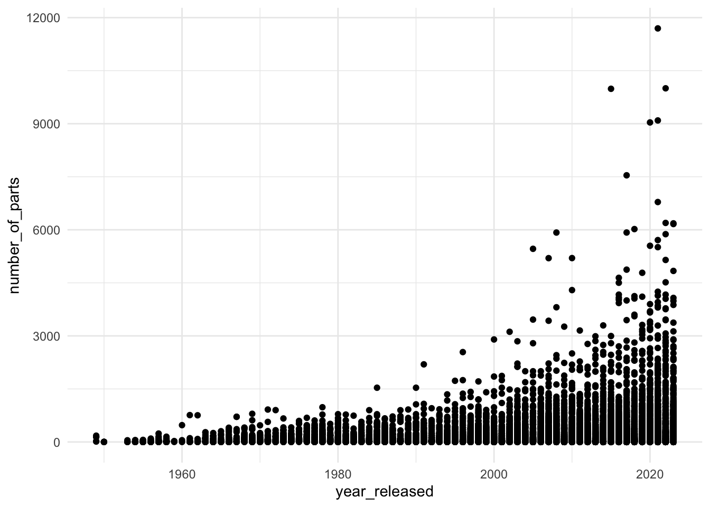

library(ggplot2)lego_df <- readr::read_csv(file.path("data", "raw-data", "lego_sets_and_themes.csv"))## Rows: 21503 Columns: 6
## ── Column specification ───────────────────────────────────────────────────────────────────────────────────
## Delimiter: ","
## chr (4): set_number, set_name, image_url, theme_name
## dbl (2): year_released, number_of_parts
##
## ℹ Use `spec()` to retrieve the full column specification for this data.
## ℹ Specify the column types or set `show_col_types = FALSE` to quiet this message.ggplot(data = lego_df, aes(x = year_released, y = number_of_parts)) +
geom_point() +
theme_minimal()## Warning: Removed 7 rows containing missing values or values outside the scale range (`geom_point()`).
sessionInfo()## R version 4.4.0 (2024-04-24)
## Platform: x86_64-apple-darwin20
## Running under: macOS Sonoma 14.6.1
##
## Matrix products: default
## BLAS: /System/Library/Frameworks/Accelerate.framework/Versions/A/Frameworks/vecLib.framework/Versions/A/libBLAS.dylib
## LAPACK: /Library/Frameworks/R.framework/Versions/4.4-x86_64/Resources/lib/libRlapack.dylib; LAPACK version 3.12.0
##
## locale:
## [1] en_US.UTF-8/en_US.UTF-8/en_US.UTF-8/C/en_US.UTF-8/en_US.UTF-8
##
## time zone: America/New_York
## tzcode source: internal
##
## attached base packages:
## [1] stats graphics grDevices utils datasets methods base
##
## other attached packages:
## [1] ggplot2_3.5.1
##
## loaded via a namespace (and not attached):
## [1] gtable_0.3.5 bslib_0.8.0.9000 xfun_0.47 htmlwidgets_1.6.4
## [5] devtools_2.4.5 remotes_2.5.0 ggrepel_0.9.5 tzdb_0.4.0
## [9] vctrs_0.6.5 tools_4.4.0 generics_0.1.3 parallel_4.4.0
## [13] tibble_3.2.1 fansi_1.0.6 highr_0.11 pkgconfig_2.0.3
## [17] EnhancedVolcano_1.22.0 lifecycle_1.0.4 farver_2.1.2 compiler_4.4.0
## [21] stringr_1.5.1 munsell_0.5.1 httpuv_1.6.15 sass_0.4.9
## [25] htmltools_0.5.8.1 usethis_3.0.0 yaml_2.3.10 crayon_1.5.3
## [29] jquerylib_0.1.4 later_1.3.2 pillar_1.9.0 urlchecker_1.0.1
## [33] ellipsis_0.3.2 openssl_2.2.1 cachem_1.1.0 sessioninfo_1.2.2
## [37] mime_0.12 tidyselect_1.2.1 ottrpal_1.2.1 digest_0.6.37
## [41] stringi_1.8.4 dplyr_1.1.4 purrr_1.0.2 labeling_0.4.3
## [45] forcats_1.0.0 grid_4.4.0 fastmap_1.2.0 colorspace_2.1-1
## [49] cli_3.6.3 magrittr_2.0.3 pkgbuild_1.4.4 utf8_1.2.4
## [53] withr_3.0.1 readr_2.1.5 scales_1.3.0 promises_1.3.0
## [57] bit64_4.0.5 rmarkdown_2.28 httr_1.4.7 bit_4.0.5
## [61] askpass_1.2.0 hms_1.1.3 kableExtra_1.4.0 memoise_2.0.1
## [65] shiny_1.9.1 evaluate_0.24.0 knitr_1.48 miniUI_0.1.1.1
## [69] viridisLite_0.4.2 profvis_0.3.8 rlang_1.1.4 Rcpp_1.0.13
## [73] xtable_1.8-4 glue_1.7.0 BiocManager_1.30.23 xml2_1.3.6
## [77] pkgload_1.4.0 vroom_1.6.5 svglite_2.1.3 rstudioapi_0.16.0
## [81] jsonlite_1.8.8 R6_2.5.1 systemfonts_1.1.0 fs_1.6.4